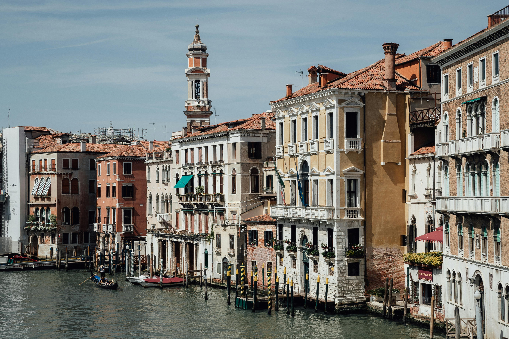

Cortado a maior parte da cidade, tem o seu "início" na laguna perto da
estação decpmboios, fazendo uma curva em forma de grande "S" pelos distritos
centrais,os sestieri, e termina junto à Basílica de Santa Maria della Salute,
próximo à Piazza San Marco. Tem uma profundidade média de cinco mestroe. A
forma mais comum de atravessar é por gôndola ou vaporreto, um tipo de
transporte público de água amplamente utilizado devido à disposição da cidade
Ao Viajar ao logo do Grande Canal, poderá ver marcas icónicas de Veneza,
como por exemplo: A Igreja Scalzi. Palácio Loredan Vendramin
